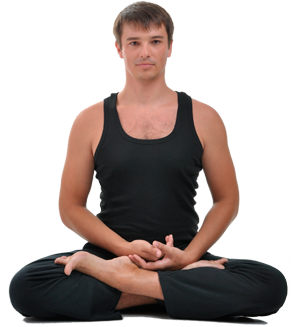

Yoga of Presence – Yoga of Presence
 Homepage About What is Yoga of Presence? About Carlos Testimonials Media Articles Photo Gallery Video Gallery Classes Schedule Glossary Yoga Meditation About Presence the book Blog Reflections 5′ meditation Mailing list ContactGoodby Yogilates; Hello Yoga of Presence
After many years of Yogilates, I feel it is time to say goodbye to it. Instead, I am very happy to fully welcome Yoga of Presence. I would like to give you a brief explanation for the reason of this change.
Read moreWhat is Yoga of Presence?
When most people think of yoga, they picture a form of gym that helps one get in touch with one’s inner energy, a way to become stronger and more flexible. Yoga of Presence could be seen as a gym class, but there is also much more to it than that.
Learn moreAbout Carlos
Born in Argentina, Carlos L’Abbate was since very young curious about our relationship to life and death, about the meaning of life and the truth of our existence.
Read his storyClasses
Carlos teaches Yoga of Presence in Bucharest. His classes have three aims: taking care of our body, taking care of our mind by harmonizing it and learning to pay attention, to value and to understand presence.
See the scheduleSubscribe to the newsletter
A mailing list with little reminders, quotes, small exercises, invitations to events and other things that will help you pause the momentum of the day by bringing you back into your own presence, into yourself.
Subscribe hereDiscover more on the blog
In the notes and reflections written by Carlos, you will find an alternative vision of life, one that is, as Epictetus had said, ”more in accordance with the nature of reality”.
Read moreA beginner's book for advanced souls
”About Presence – A journey into ourselves” is the book Carlos published in 2017. You can find it in bookstores in both English and Romanian.
Order the book Homepage Contact© 2021 Yoga of Presence. All rights reserved
Homepage About What is Yoga of Presence? About Carlos Testimonials Media Articles Photo Gallery Video Gallery Classes Schedule Glossary Yoga Meditation About Presence the book Blog Reflections 5′ meditation Mailing list Contact